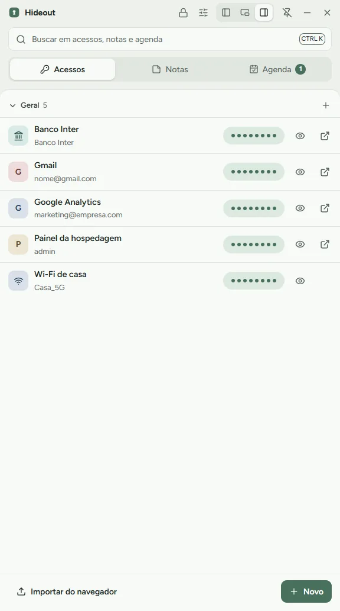
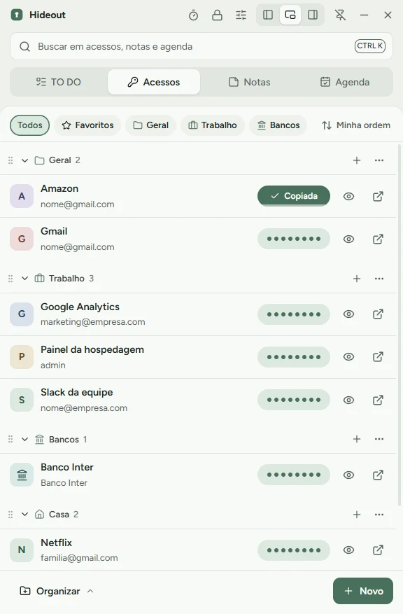

Senhas, tarefas, notas e agenda a um clique, num cofre que só você abre.
Grátis e de código aberto para Windows. O cofre é um arquivo criptografado no seu PC: sem servidor, sem conta. Encaixa na esquerda ou na direita, copia senhas com um clique e ainda tem TO DO e temporizador.
Windows 10 e 11. O Windows pode avisar que o app é desconhecido: clique em Mais informações e depois em Executar assim mesmo.
É um app para Windows: abra esta página no computador para instalar.
- Código aberto (MIT)
- AES-256-GCM e scrypt
- Sem servidor, sem conta
- 2FA e PIN

Suas senhas só se abrem no seu computador. Nenhum servidor vê nada.
O Hideout não tem servidor e não pede conta online. Ele só se conecta à internet para procurar versões novas no GitHub, o que dá para desligar, e para a verificação de vazamentos, quando você pede. Nenhuma senha sai do PC. O cofre é um arquivo criptografado. Se ele estiver no OneDrive, que é o padrão, a nuvem só guarda bytes embaralhados.
- Senha mestra vira a chave por scrypt, que torna adivinhação em massa cara e lenta.
- 2FA com app autenticador quando você entra num computador novo.
- PIN de 6 dígitos no dia a dia, protegido pelo Windows. Cinco erros pedem a senha.
- Copiou, sumiu: a senha sai da área de transferência em 30 segundos e não entra no histórico do Win+V.
- Código aberto: qualquer pessoa pode conferir o que o app faz.
- Vazamentos: confere se alguma senha sua apareceu em vazamentos conhecidos. Só 5 caracteres de um hash saem do PC, nunca a senha.
Não existe. Nada para invadir, nada para vazar.
Veja as telas reais e escolha entre 9 temas ou crie o seu
Toque nos botões para trocar a tela ou o tema. O app está em português, inglês e espanhol.
A janela também flutua ou encaixa na esquerda e na direita. Ver todos os atalhos e ajustes

Baixe o Hideout e crie seu cofre
Grátis, sem conta, e suas senhas só se abrem no seu PC.
Versão 1.0.1, publicada em 26 de outubro de 2026. O Windows avisa porque o instalador ainda não tem certificado de assinatura, que é pago. Clique em Mais informações e depois em Executar assim mesmo. Todo o código está no GitHub para você conferir.
Perguntas frequentes
Esqueci a senha mestra. E agora?
Use o código de recuperação de 24 caracteres que o Hideout mostra uma única vez, ao criar a conta. Com ele você cria uma senha nova, e ele também serve se perder o celular do 2FA. Sem a senha e sem o código, ninguém abre o cofre, nem quem fez o app.
Preciso de OneDrive? Funciona em mais de um PC?
Não precisa. Por padrão o cofre fica na pasta Hideout-Dados do OneDrive, mas você escolhe qualquer pasta. Com o OneDrive, o mesmo cofre abre em outro PC com usuário, senha mestra e 2FA.
Dá para trazer as senhas do navegador?
Sim. Exporte o CSV de senhas do Chrome, Edge ou Brave e use Importar do navegador na aba Acessos. Depois apague o CSV, porque ele não é criptografado.
Por que o Windows avisa ao instalar?
O instalador ainda não tem certificado de assinatura digital, que é pago. Clique em Mais informações e depois em Executar assim mesmo. O código inteiro está no GitHub.
Como sei que é seguro?
O código é aberto (MIT) e qualquer pessoa pode conferir. Não há servidor nem telemetria. A criptografia, AES-256-GCM com chave derivada por scrypt, está no arquivo src/main/crypto.ts. O Hideout ainda não passou por auditoria independente.
O Hideout se atualiza sozinho?
Sim. Ao abrir e uma vez por dia, ele procura versões novas no GitHub, baixa em segundo plano e pergunta se pode reiniciar. Dá para desligar em Configurações → Dados. A versão portátil só avisa e abre a página de download.
Colaborar
Achou um erro ou tem uma ideia? Todo mundo pode ajudar.
Feito com Electron, Vue 3 e Nuxt UI. Para rodar o código:
git clone https://github.com/pbrmarcos/hideout cd hideout npm install npm run dev
Comentários
Os comentários usam o GitHub Discussions e só carregam quando você pede. Para comentar, entre com sua conta do GitHub.